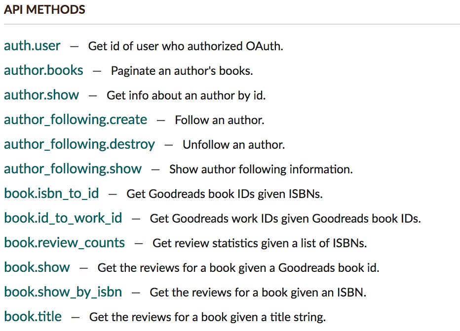
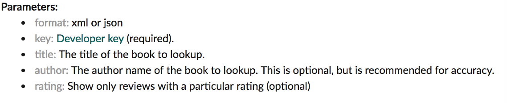

About Goodreads.com APIs
How you can get millions of useful ratings and descriptions from Goodreads.com
Goodreads.com is a popular social network for book lovers to exchange their thoughts. Inside this site, you can see thousands of reviews made by its members. You can get a very good sense about how worthy one book is by the rating of a book. If you are planning to start reading a new book, but can't decide which one to go for, Goodreads.com will definitely give you a great hint of that. Goodreads.com has become an Amazon company in 2013. Now it's integrated with Amazon kindle, so you can read the reviews and ratings more convenient for millions of books and easily pick the one you want to read most. You can write comments and share them to the community. You can, of course read reviews from other members too. To learn more about how it works at Goodreads.com, check out this link.
Beside that, do you know you can use APIs to request information from Goodreads.com too?
API: book.title
Below is a list of APIs you can call from Goodreads.com. To view the full list, click here.
Using these APIs, you can get or post through Goodreads.com. In this guide, we are mainly focusing on one API : book.title. You can get description and ratings for a book given a title string by calling this API using Html method GET. This call will return either an XML or JSON response. You can interpret these response and display them in a html page. The parameters that can be taken for this call are list below. A string for title is required to do the search. The author information can increase the accuarcy of the search.
This API call requires a developer key (API key) authorized by Goodreads.com. So next step, you will need to request an API Key from Goodreads.com
Next: Requesting an API Key